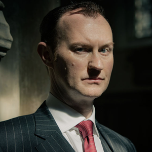
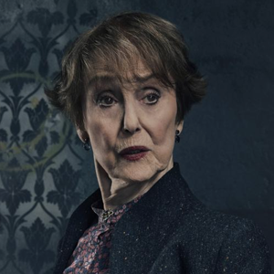

CHARACTERS

Sherlock Holmes
He is the master of deduction, a consulting detective, the only one in the world as he invented the job. He's brilliant, a proper genius Should you ever meet him, he will no doubt read your family history in your mobile phone and your occupation in the way you hold yourself. Be warned though, he is not a man who has time for social graces, so you may find him more than just a little insulting at times, but you mustn't be offended if he calls you an idiot, he thinks practically everyone is!
John Watson
As a doctor, John, and he will tell you this himself if asked, is very good. Having returned home from serving as an Army Doctor in Afghanistan after being shot in the left shoulder, he now works as a GP at a local surgery. Should you wish to book an appointment with him, expect him to be running late as he is prone to falling asleep at his desk after he and Sherlock have had a late one on a case.
Jim Moriarty
James "Jim" Moriarty is the main antagonist of Series 1 and 2 of the BBC drama Sherlock, and later a posthumous antagonist in both the 2016 special "The Abominable Bride" and Series 4. He is a consulting criminal and the archenemy of Sherlock Holmes, and can be considered as the primary antagonist of the whole series.

Mycroft Holmes
You do not contact Mycroft Holmes, he contacts you, and if he ever chooses to, rest assured he won't make some sort of threat as your situation will be quite clear to you. Mycroft worries about his younger brother Sherlock Holmes, constantly. He would prefer his concern go unmentioned however, as they have what you might call a difficult relationship. If you were to ask Sherlock about his older brother, he would probably tell you he is his archenemy, in his mind anyway.
